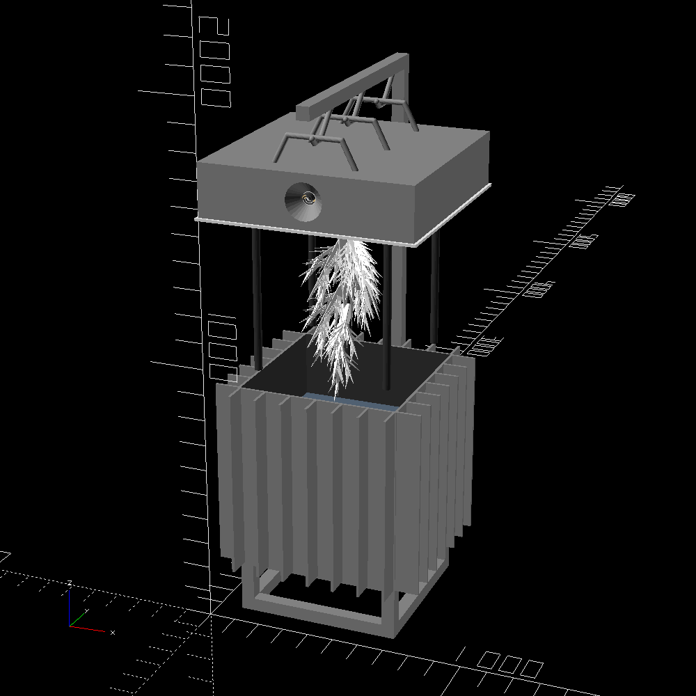

link to this page
Felicity techtree
 A collection of blueprints and procedures that together form a self-sufficient whole, capable of producing working equipment from any of the provided blueprints given only solar energy and asteroid material.
A collection of blueprints and procedures that together form a self-sufficient whole, capable of producing working equipment from any of the provided blueprints given only solar energy and asteroid material.
This is the result of Felicity's combined curiosity and aversion to relying on technology she does not understand, that pushed her to put a lifetime of work into developing a complete technological system that is simultaneously sufficient for its own needs and simple enough for a protohuman mind to understand.
The conceptual simplicity often comes at a great cost in efficiency in terms of energy or time as well as scalability.
Most of the industrial processes are executed on a small scale, using machines that a single person can operate.
Low Temperature Electrolysis of mixed metal oxides

Low Temperature Electrolysis refining can be thought of as a precursor to a whole big branch of the tech tree Felicity operates, as it trivializes the extraction of several metals from asteroid material.
Asteroid dust is mixed in with a concentrated solution of sodium hydroxide at close to 100oC and a current is passed through it, reducing the metal oxides from the dust into a mixed alloy of these metals.
The resulting alloy is roughly equivalent to wrought iron, which can be later refined into the elemental metals or simply used as is, but it is not corrosion-resistant.
Once the process is done, the cathode will have grown a beautiful and heavy tree of crystallized metal that can be lifted out of the machine and scraped off for further processing.
A large amount of oxygen is also produced in the process, and a lot of elements cannot be reduced to their elemental form like this, so they will be left in a sludge of dust at the bottom that needs to be cleaned out and maybe refined in some other way.
Among those elements which are left unextracted are some very important ones like chromium, which is needed for stainless steel, or lithium, which is needed for high-performance batteries.
These lacking elements are the reason that the LTE process can be thought of as a precursor to it's own branch in the tech tree, as the specific set of elements it provides forces a lot of downstream design choices that would have otherwise made no sense.
document with math behind the process can be found here
Ion beam deposition printing
 This is one of many things that Felicity did not bother re-inventing herself, as the complexity of the machinery required simply overpowered the need for deep understanding when sufficiently open source solutions already existed.
This is one of many things that Felicity did not bother re-inventing herself, as the complexity of the machinery required simply overpowered the need for deep understanding when sufficiently open source solutions already existed.
Using ion beams to deposit material in exact quantities at exact positions can create macroscopic objects given enough time.
The exact printer model that Felicity included in the tech tree can achieve deposition rates of 5 micromol per second, which means that print times typically vary from hours to weeks with some exceptions.
The willingness to make such an extreme payment of time and energy (since the machine is pulling about 1020 watts the whole time if printing at max speed) for the ability to produce complex electronics and photovoltaics from a single machine is fairly typical of Felicity's approach to technological independence.
math document here
Gallium arsenide photovoltaics
Gallium Arsenide photovoltaics are the primary power source for Felicity.
These can be made simply with the ion beam deposition process.
At great distances where sunlight is faint, they would be used as a small part of larger concentrated solar arrays that can boost the power production by 23.5 times while costing only about 1.5 times as much energy (but much more material) to produce than plain solar panels.
Ofcourse a concentrated solar array has the downside of having to stay pointed accurately at the sun, which is largely negated by operating in weightlessness.
math document to be added
Hydrogen peroxide synthesis
High-concentration hydrogen peroxide (also called HTP for "high-test peroxide") can be used as a monopropellant and works adequately well as fuel for travel between destinations within a planet's sphere of influence.
The supplied machine for HTP production uses a process that involves passing current through water while repeatedly flipping its polarity to produce 10% hydrogen peroxide, and then uses vacuum distillation to concentrate it to 85%.
HTP can be handled well with monel, an alloy of nickel and copper, which notably can both be acquired from the LTE process.
Simple thrusters can be fairly easily 3d-printed from monel, using either catalytic or thermal decomposition to extract the energy from the hydrogen peroxide.
Piping and fuel tanks can also be made from monel, and must use welded seams.
Avoiding HTP leakage is of extreme importance given that the primary construction material in this tech tree is a wrought-iron-like alloy vulnerable to corrosion.
Any amount of HTP spillage usually results in blood red rust covering the affected wall or floor in less than a minute.
math document to be added
Drone bodies
Remotely controlled, self-contained platforms for interaction with the physical world.
Dedicated page explaining the software used and listing various drone designs included in the felicity tech tree.
todo
todo
math document todo